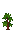
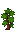

Mandioca
Da Vale das Araucárias Wiki
Mandioca é uma das lavouras do Sul adicionadas pelo mod na versão 1.8.0, com sprites próprios desde a 1.8.1. Cresce na primavera, no verão e no outono. Fica pronta em 14 dias.
Conteúdo
Descrição
Raiz rica em amido, também chamada de aipim. Coma só cozida ou frita.
Sementes
Manivas de mandioca: Plante na primavera, no verão ou no outono. Leva 14 dias para amadurecer.
| Loja | Preço | Quando é vendida | Preço de venda da semente |
|---|---|---|---|
| Armazém do Pierre | 60g | Primavera, Verão, Outono | 30g |
Crescimento
Estágio 1
2 diasEstágio 2
3 diasEstágio 3
4 dias
Estágio 4
5 dias
Colheita
Total: 14 dias
Precisa ser regada todos os dias (a chuva rega). Adubos de velocidade e a profissão Agricultor reduzem os dias pelas regras normais do jogo. Veja Cultivo.
Colheita
- Método: com a mão.
- Rendimento: 2 por colheita.
Calendário
Plantando no 1º dia, a primeira colheita é no dia 15 da primavera. Últimos dias para plantar e ainda colher: dia 28 da primavera, dia 28 do verão e dia 14 do outono. Veja o calendário completo.
Preço de venda
| Qualidade | Sem profissão | Lavrador (+10%) |
|---|---|---|
| Normal | 100g | 110g |
| 125g | 137g | |
| 150g | 165g | |
| 200g | 220g |
Lucro aproximado por dia de canteiro, vendendo direto e sem qualidade nem profissões: 10,0g (documentação do mod).
Processamento
- Barril e conserva: suco e picles, pela regra nativa dos vegetais.
Configurações conferidas nos arquivos do mod; o teste dentro do jogo ainda está pendente, segundo o roteiro do próprio mod. A semente pode sair no Gerador de Sementes pela regra nativa.
Notas regionais
- A mandioca vai da primavera ao outono, com ciclo longo.
- Cultura análoga usada para equilibrar o lucro: Inhame (10 d) e Abóbora (13 d), colheita única.
- Referência: Época de plantio da mandioca no Paraná (IDR-Paraná, nota técnica).
Histórico
- 1.4.0 a 1.5.x: existiu no módulo antigo de cultivos e culinária, com outros números; foi retirada na 1.6.0. Na 1.8.0 voltou com os mesmos IDs.
- 1.8.0: adicionada com semente, colheita, loja e processamento.
- 1.8.1: sprites próprios da plantação, da semente e da colheita.